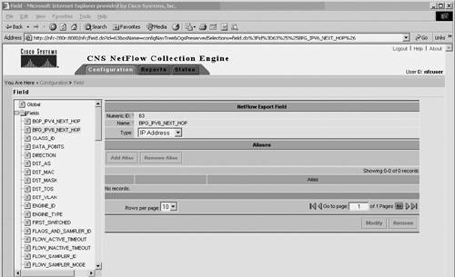
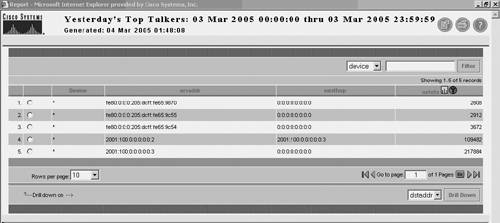
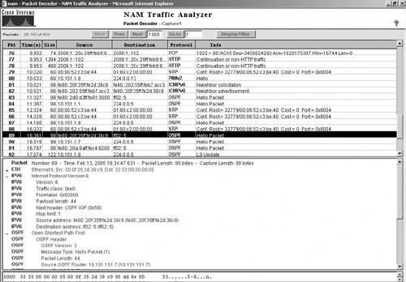
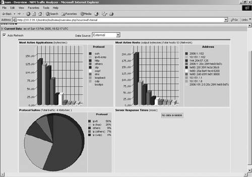
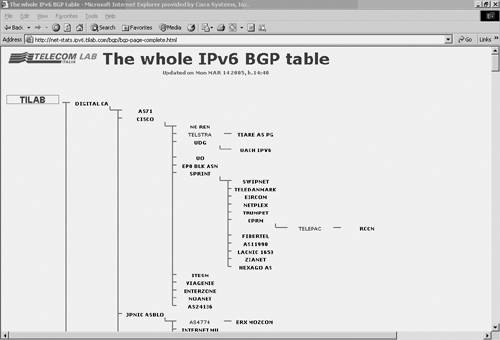
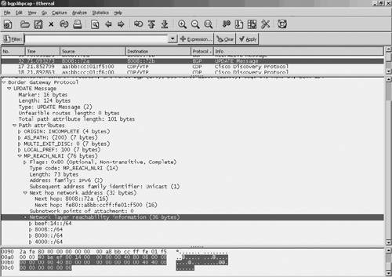

Fault ManagementAs already mentioned, fault management encompasses traffic management, topology monitoring, and routing management. Traffic management is one of the keystones of successfully deploying services and applications. It encompasses a large variety of tools and features to follow the life cycle of new deployments: from traffic measurement to traffic analysis, before and after new service is deployed, from link management to node status, to end-to-end service-level management. A large part of traffic management deals with network troubleshooting, to provide in-depth analysis of traffic. Most of the tools can generate reports and alerts to assist the network administrator in identifying problems, isolating, and then troubleshooting them. Note that many tools used for traffic management are also used for performance monitoring, such as Argus and Nagios. These tools are reviewed in the section "Performance Management." Flow Analysis Using NetFlowThe NetFlow Collector receives UDP packets containing flow exports from the NetFlow router and stores them. Flow content can be used for a variety of purposes, including network management and planning, enterprise accounting, Internet service provider (ISP) billing, data warehousing, mitigation of denial-of-service (DoS) attacks, and data mining for marketing purposes. NetFlow analyzers process the stored flows and present them in various formats (alerts, statistics, graphics, and so on). Often, these two functions are handled by the same tool. A number of NetFlow Collectors and analyzers are available, including several that support the v9 export format, hence IPv6:
Cisco NFCThe Communication & Network Services (CNS) NetFlow Collection Engine performs the following functions:
CNS NetFlow Collection Engine collects and summarizes (aggregates) data into data files based on user-defined criteria specified in a CNS NetFlow Collection Engine aggregator. An aggregator is an aggregation task defined by a set of user-configurable attributes that specify how CNS NetFlow Collection Engine summarizes the traffic flows that are received. Two important aggregator attributes are as follows:
CNS NetFlow Collection Engine provides a set of predefined aggregation schemes to help collect NetFlow export and summarize the data. Moreover, in release 5.0, you can modify any of the predefined aggregation schemes or define your own aggregation schemes. You can also use filters with aggregation schemes to include or exclude certain types of NetFlow data. CNS NetFlow Collection Engine consists of the following components:
Starting with NFC 5.0, Cisco NetFlow Collector supports IPv6. This means that it can collect NetFlow v9 records, including records with IPv6-specific fields, aggregate them according to the aggregation scheme configured on the NFC interface, and generate reports and alerts specific to IPv6. The screen captures in Figures 10-6 and 10-7 illustrate one of the NFC configuration steps for IPv6 (NetFlow Export field) and show a simple IPv6 report. Figure 10-6. Configuring NFC: FieldsFigure 10-7. Sample of an NFC reportFor more detail about Cisco NFC and its IPv6 support, refer to the NFC 5.0 configuration guides. IPFlowIPFlow is a collector for NetFlow v1, v5, v6, v7, v8, and v9. It was initially developed for managing the Picardie regional network, but is freely available. The primary design goal was to provide a tool suited for troubleshooting networking issues such as link congestion of unexpected traffic. It supports logging flow data to disk, data aggregation according to configuration, port-scan detection, storage of aggregated data, and graphical display of flow statistics. Cisco Network Analysis ModuleThe Cisco Network Analysis Module (NAM) is a service module installed in a single slot in Cisco Catalyst 6500 series switch or Cisco 7600 series router chassis that provides integrated network-monitoring services within the switch or router. The NAM collects statistics on network traffic and is used for real-time traffic analysis, performance monitoring, and troubleshooting. The NAM monitors and analyzes network traffic using remote monitoring (RMON), RMON extensions for switched networks (SMON), and other Management Information Bases (MIBs). The NAM has the capability to gain visibility into traffic from other switches and routers, whether they are sitting on the LAN or on the WAN. This is done through RSPAN and NetFlow Data Export (NDE). Table 10-4 reviews all possible data sources for the NAM. When enabled on the switch, the NetFlow data source becomes available on the Cisco NAM without any SPAN sessions being created. NetFlow can also be enabled on interfaces on remote devices and sent to the NAM for analysis. With NetFlow available as a data source, the Cisco NAM can provide information such as hosts and conversations, applications, and so on directly from the traffic analyzer or other third-party tools.
NDE records offer greater traffic-monitoring capacity because this data source is available (when enabled from the switch) without creating any SPAN sessions to the Cisco NAM. The NAM can provide information on the packets through the NDE records without having to examine each packet, and thus allow for more traffic to be analyzed. NetFlow provides statistics on applications, hosts, and conversations. Starting with version 3.4, NAM provides support for NetFlow v9, making it an IPv6-enabled "NetFlow Collector on a linecard" for the Catalyst 6500/7600 platform. Cisco NAM can monitor and decode IPv6 traffic. The user can set up alarms with IPv6 addresses and configure IPv6 capture filters and IPv6 historical reports. Figures 10-8 and 10-9 are NAM traffic analyzer screen captures, showing, respectively, an IPv6 packet decode and IPv6 traffic statistics per protocol and address. Figure 10-8. NAM Traffic AnalyzerFigure 10-9. NAM Traffic Analyzer per Protocol Statistics Example OutputNote Although a NAM can receive and decode NetFlow v9 records pertaining to IPv6 flows, it cannot, as of this writing, create IPv6 flows itself. Topology ManagementTopology management is the network-management component that keeps track of network topology. The information acquired and maintained by topology management is important to other processes such as fault management. In simple cases, topology management might simply keep track of system status (active/standby). In large networks with a large number of devices, it can include automatic discovery modules and a graphical representation of the network, with hierarchical views down to the individual nodes and interfaces. Autodiscovery is done by an NMS to automatically map the devices in a network, to populate an inventory and to gain information on network topology. Autodiscovery is one of the interesting challenges standing in the path of deploying IPv6-only networks, and as such, is reviewed thoroughly in the next section. As long as managed devices and routers are dual stack, the network discovery is likely to keep using existing IPv4-based mechanisms. However, IPv6-only devices are already being deployed, and they create new challenges for network discovery. To measure the difficulties of discovering automatically an IPv6-only network, it may be helpful to review existing mechanisms used with IPv4. With IPv4, network discovery can be achieved by two methods:
Which mechanisms can be used in IPv6 autodiscovery? As far as the CDP-based technique is concerned, no change is required in the CDP MIB, but the cdpCacheAddressType object must report a new value (IPv6) for the network protocol (CiscoNetWorkProtocol). As of this writing, this is not yet supported. With non-CDP-based discovery, typical discovery algorithms in an IPv4 network rely on information from MIB-2 (RFC 1213) and ICMP echo requests to discover all devices in a network. Starting from a seed router, neighboring routers can be found from the router's ipRouteTable entry in MIB-2. The values of ipRouteDest, ipRouteMask and ipRouteType can be used to find the subnets directly connected to this router. To make sure the seed router's ARP cache has entries of all the hosts in the subnet, ICMP echo request messages are sent to all the possible IP addresses in the subnet and wait for the echo reply messages. The router's ARP table can then be queried from ipNetToMediaTable. This provides a list of directly connected hosts, layer 2 devices, and other routers. The same technique is then iteratively applied to each discovered router. With IPv6, the neighbor cache can be accessed as InetNetToMediaTable, which is part of the updated RFC 2011 MIB. However, the IPv6 addresses obtained from the Neighbor Discovery (ND) cache are likely to be link-locals, if the router uses them to communicate with its peers. Such addresses are useless to the remote NMS because they are significant only on a link. The NMS requires a device-global IPv6 address for its SNMP queries. On the other hand, unlike with IPv4, the NMS cannot remotely force an ND cache to populate entries to all nodes' neighbors. With IPv6, scanning all hosts on a subnet is out of question, given the number of possibilities (remember this was presented as security strength in preventing address scanning!); IPv6 broadcast does not exist; IPv6 multicast could be an alternative (using FF02::1), but it has link-local scope, and therefore will return link-local addresses. That leaves autodiscovery with few open options. One of them is to establish some relationship between the link-local address and global address based on the relationship between the interface ID used for both addresses (see Chapter 2). Example 10-11 shows an interface where EUI-64 is used to generate the interface ID. Example 10-11. Using the Automatically Formatted EUI-64 Interface ID to Tie Link-Local and Global Addresses
After the relationship is established, the NMS can do the following:
Another possibility is to use MIPv6 capability described in RFC 3775 to set a flag bit to indicate that the router sending the advertisement message is serving as a home agent. When this flag is set, the router (if it supports that functionality) returns its global address rather than prefixes. The seed router still has to store this information in a MIB that the NMS can query. Of course, you still have the possibility (recommended by many NMSs) to provide up front the list of addresses to be "discovered." It is not a friendly solution, but it is one that works all the time! Integrated platforms such as HP-OV and CiscoWorks provide extensive capabilities for managing the network topology. They can autodiscover the topology, currently using IPv4 mechanisms or based on a predefined list of devices to discover. Specific tools also exist, such as InterMappper and Nagios. InterMapper does not currently support IPv6, although it was used on the 6NET project to monitor the status of the dual-stack network. InterMapper is a network- and server-monitoring and alerting tool. It provides a real-time graphical view of traffic flows through networks, routers, and links. It can autodiscover the topology of the network if SNMP-speaking routers are present. However, the autodiscovery is entirely based on IPv4 mechanisms (SNMP, address scanning, and so on) and manually configured entries of devices to discover. InterMapper is available at http://www.intermapper.com/. Routing ManagementRouting can get tricky in large multidomain, multiprotocol networks. Routing management tools provide visibility into network-wide, multiprotocol IP routing activity, enabling network administrators to predict, monitor, and analyze routing problems. One of the most popular tools in this arena is ASpath-tree, which analyzes the BGP routing tables. Other tools can analyze OSPF and other routing protocol tables. Most of them are based on MIB (BGP, OSPF, and so on) and locally executed router commands. ASpath-tree is a tool used to perform IPv6 network operation analysis based on snapshots of the BGP routing table on IPv6 routers. Originally designed to be used by an IPv6 site involved in the experimentation of the BGP protocol inside the 6Bone network, it now supports a set of features useful within any production IPv6 network that makes use of BGP. Based on a single snapshot of the IPv6 BGP table, ASpath-tree automatically generates a set of HTML pages, providing a graphical view of the routing paths toward the other IPv6-connected domains. In addition, it provides pages for the detection of anomalous route entries announced through BGP (invalid prefixes and unaggregated prefixes), anomalous autonomous system numbers (for instance, reserved or private) in use, and a set of summary information, including the following:
Figure 10-10 captures an ASpath-tree screen, obtained on the whole IPv6 BGP table. Figure 10-10. ASpath-tree Output ScreenASpath-tree was developed inside the TILAB's IPv6 laboratory and is available at http://carmen.ipv6.tilab.com/ipv6/tools/ASpath-tree/. Note The Cisco router must be configured to accept rsh commands from the workstation that is running the ASpath-tree scripts. The administrator of the Cisco router must add the following configuration: ip rcmd remote-host eric valbonne-router root ip rcmd rsh-enable Polyphemus is a tool for exploring and visualizing the network. It can look inside an autonomous system and explore a network at the level of routers and their physical links. It can also provide inter-autonomous system topologies. Areas are explored by directly accessing the MIB of the routers with SNMP. The user can visualize routers, LANs, areas, and inter-area relationships. For each item on the map, a full set of information can be displayed. Although it cannot support IPv6 as of this writing, plans exist to extend it to support OSPFv3, SNMP over IPv6 transport, and IPv6 MIBs. It is available at http://www.dia.uniroma3.it/~polyph/. Analysis for TroubleshootingMany of the tools reviewed throughout this chapter can be used to "troubleshoot" problems. The tools presented in this section are more specialized. They analyze in detail the packets exchanged between devices to help pinpoint specific anomalies. The NAM traffic analyzer reviewed in the section "Cisco Network Analysis Module" is an example of such a tool. Two more tools have become quite popular among network engineers: Analyzer and Ethereal. Both of them provide full support for analyzing IPv6 packets. Analyzer is an IPv6-enabled traffic-monitoring and -troubleshooting tool, released under a BSD license. It can capture (and display) packets on both the local machines and remote probes. Analyzer can monitor the reachability (through a set of ICMP echo, a.k.a. ping, packets) of remote hosts, saving data into a database, and collect additional statistics. Alarms can be sent on unexpected results. Analyzer can discover the presence of the active station on a local network, monitor station availability, and detect address spoofing (for instance, when the same IPv4/IPv6 address appears to bind more than one MAC addresses). Analyzer can monitor the presence of TCP/UDP/ICMP "sessions" over the network, saving a database record for each session detected within a timeframe. A summary of the session is then saved into a database for later processing. Analyzer is available from http://analyzer.polito.it/30alpha/. Ethereal and tcpdump are packet analyzers. Ethereal offers a graphical front end that enables the user to drill down in the information captured. They are used for network element troubleshooting, network fault isolation, intrusion detection, and so on. Ethereal fully supports the basic IPv6 protocols and all TCP- and UDP-based application protocols running over IPv6. It is widely used to develop and troubleshoot IPv6 applications and protocols. Figure 10-11 illustrates an Ethereal output, with details on a BGP-IPv6 update packet: Figure 10-11. Ethereal Output ScreenEthereal is available at http://www.ethereal.com/. |